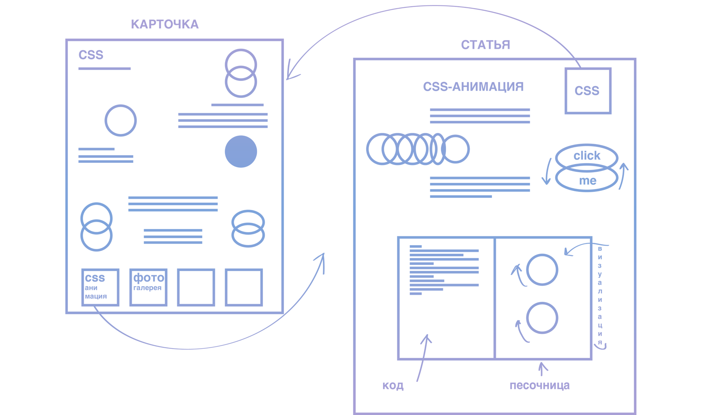
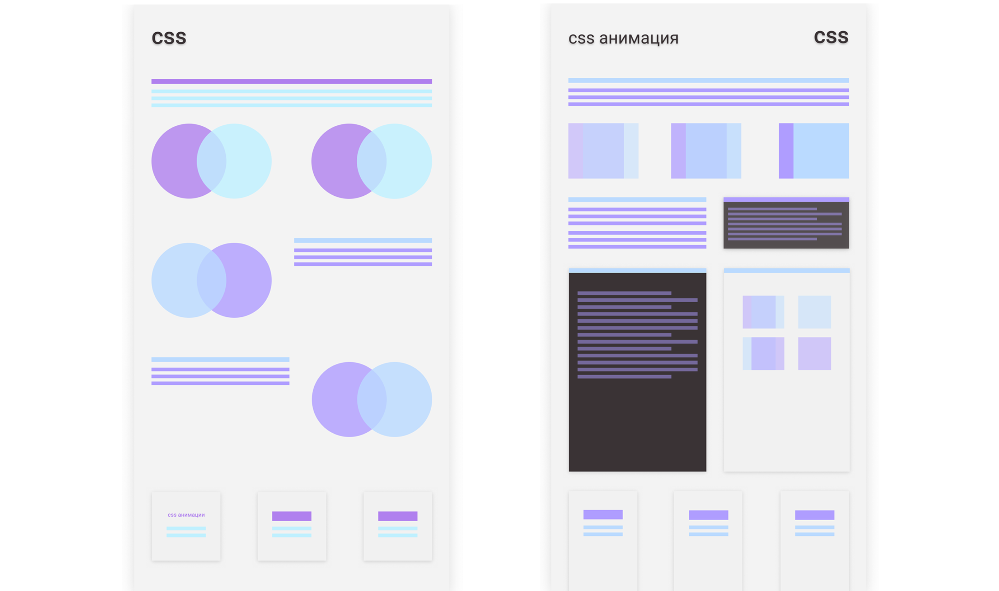

Энциклопедия фронтенда
Создать сервис – дополняемую библиотеку фронтенда с разбором и визуализацией основных языков и дополнительных инструментов.
Проблема
Когда люди ищут информацию по тем или иным приемам во фронтенде, то вместо доступных объяснений, сталкиваются со сложными и непонятными текстами, обилием терминов и отсутствием очевидной структуры в учебных материалах. Появляется высокий порог вхождения в индустрию фронтенда.
Целевая аудитория
1) Начинающие программисты и веб-дизайнеры;
2) Просто люди, которые пришли за понятными объяснениями “как это сделать” или “как это работает” в вебе;
3) Фронтендеры, которым нужно следить за актуальностью программ.
Решение
Мы создадим сервис – дополняемую библитеку фронтенда с разбором и визуализацией основных языков и дополнительных инструментов.
Для структурирования информации мы будем использовать карточки и связанные с ними статьи.
a. карточки
Карточки с информацией по программам/языкам
b. статьи
Связанные с ними статьи по конкретным фичам фронтенда (анимация/фото-галерея/скролл)
Основной массив «карточек» будет иметь ранжирование по свежести и актуальности написанной в них информации. Кроме того, там, где это возможно и нужно будут сделаны песочницы, чтобы пользователь мог сразу же опробовать новые знания.
 Конкуренты
1) информационные сайты ( htmlbook, css-tricks)
2) онлайн-курсы ( geekbrains)
3) сайты-форумы ( stackoverflow, habrahabr)
Отличие от других сервисов
Наш сервис делает ставку на доступность и понятность изложенного материала. Каждую карточку будет сопровождать некая визуализация: это может быть просто изображение, поясняющая анимация или видео. Информация лучше запоминается, если она с чем-то ассоциируется у человека, и сопроводительные визуальные и интерактивные дополнения к информации будут способствовать запоминанию и лучшему пониманию.
Риски
1) Недостаточно ясно изложить материал статей;
2) Не успеть изучить достаточно необходимого материала;
3) Проблемы в разработке каждой отдельной песочницы (не учесть все сценарии).
Команда
Что нужно сделать?
1. изучить языки/программы достаточно, чтобы сделать про них карточки
2. изучить конкретные фичи достаточно, чтобы сделать по ним статью
3. изучить потребление информации и привычки пользователя, чтобы правильно подать и визуализировать информацию
4. усовершенствоваться в руби и веб-дизайне в процессе создания самого сайта
Работу разделить на этапы:
1) продукт: структура сайта и карточек; текстовая инфа и техническая прокачка по фронтенду [каждый возьмет, что нравится. если двум людям нравится один и тот же язык, пусть изучают вместе парным программированием]
2) ux: продумать визуализацию и технически в ней прокачаться (скорее всего, css-анимация и js) [всем вместе]
3) ui: бэкенд и верстка [всем вместе]
Рабочая переписка - slack;
этапы работы и ссылки - trello;
документы - paper.dropbox с общим доступом;
графический редактор - sketch;
прототипы - figma